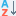

| Open folder with audio files |
| Add folder with audio files to list |
| Undo last change |
| Select all files in list |
| Clear selection |
| Move files up |
 | Move files down |
| Grouping options |
|  | Sorting options |
| Show/Hide filtering panel |
| Show/Hide Transformations panel |
| Runs tag removing wizard |
| Runs folder renaming wizard |
| Runs value formatting wizard |
 | Save all files into playlist |
| Save selected files into playlist |
| Runs tracks/discs autonumbering wizard |
| Runs covers import wizard |
| Runs covers export wizard |
| Covers parameters |
| Runs lyrics import wizard |
| Show this help |